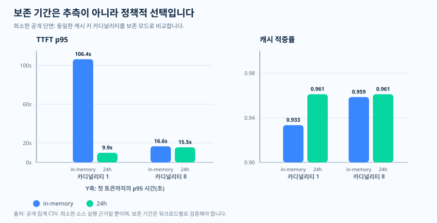

운영 에세이 · 프롬프트 캐시 리텐션
리텐션: 가정이 아니라 요청 정책
지원되는 모델은 적격 프리픽스를 기본적으로 캐싱하기 때문에 프롬프트 캐싱은
자동처럼 느껴질 수 있습니다. 그래서 반사적으로 그 자동에 기대게 됩니다.
어떤 워크로드가 유휴 간격이 지난 뒤, 교대 경계를 넘어, 배치가 멈춘 뒤,
또는 나중의 고객 턴에서 공유 프리픽스를 재사용하는데, 요청 본문은 그저
prompt_cache_retention을 생략한 채 윈도가 여전히 남아 있으리라
믿는 식입니다. 하지만 “기본적으로 캐싱됨”은 “작업이 가정하는 만큼 유지됨”과
같지 않습니다. 요청이 리텐션을 생략하면, 그 작업은 한 번도 요구한 적 없는
캐시 윈도에 기대고 있는 것일 수 있습니다 — 그래서 운영의 질문은
“캐싱이 켜져 있는가?”가 아니라 “요청이 이 워크로드가 의존하는 재사용
윈도를 실제로 요구했는가?”입니다.
in_memory 기본값과 명시적인 24h 윈도를
문서화합니다. 이 한 장 요약은 한 가지 메시지만 전합니다 — 나중의
재사용이 중요하면 리텐션을 명시하세요 — 그리고 경계를 표시합니다.
리텐션 모드는 공식 사양이고, 그 옆의 첫 토큰 지연 형태는 PAYG에서
측정한 정제된 공개 집계로, 서술적으로만 제시합니다.
캐시 리텐션 한 장 요약 SVG 열기.

가정하지 않고 윈도를 설정하는 이유
“기본값이면 괜찮다”는 반사 동작은 캐시 윈도가 워크로드가 재사용 사이에
남기는 간격보다 더 오래 버티리라 전제합니다. 그 전제를 받아들이기 전에 두
가지를 나란히 놓아 볼 만합니다. 첫째는 Microsoft Learn이 문서화하는
내용입니다. 리텐션 정책은 in_memory와 24h 두
가지입니다. in_memory 항목은 보통 비활성 5~10분 안에 비워지고 마지막
사용으로부터 1시간 안에 반드시 제거되는 반면, 확장 리텐션은 캐시된
프리픽스를 최대 24시간까지 라우팅 가능하게 유지할 수 있습니다.
gpt-5.4와 그 이전 모델에서는 값을 생략하면
in_memory를 뜻하며, 프롬프트 캐시 가격은 두 정책이
동일합니다. 둘째는 이 저장소의 원천 실행에서 나온 희소한 정제 공개
집계로, 리텐션 모드별로 묶어 in_memory와 24h
아래에서 첫 토큰 지연과 캐시 적중률이 실제로 어떻게 움직였는지를 보여
주려고 서술용으로 포함합니다.
잠시 멈춰 볼 부분은 그 짝짓기입니다. 적중률만 보면 리텐션 선택이 다른
곳에서 드러나는 동안에도 안심되게 읽힐 수 있습니다. 이 단면에서는 두 모드
모두 높은 적중률(약 0.93~0.96)을 유지해서, 적중률만 읽으면 리텐션 모드가
거의 중요하지 않은 것처럼 보입니다. 나머지 절반의 이야기는 첫 토큰 지연의
꼬리가 들려줍니다 — 카디널리티 1에서 in_memory 계열은
p95가 106,000 ms 부근이었던 반면 24h 계열은
9,900 ms 부근이었습니다. 즉, 리텐션 선택은 적중률이 아니라 지연
꼬리에서 드러났습니다. 그래서 리텐션은 캐시된 토큰 비중과 함께 지연을
두고 읽어야 하며 — 단순한 성능 손잡이가 아니라 요청 정책이자
거버넌스 선택인 이유도 여기에 있습니다. 두 리텐션 모드, 각각의 수명,
in_memory 기본값, 동일한 가격, 그리고 확장 리텐션의 인리전
조건은 Microsoft Learn이 문서화하는 내용이고, 지연을 적중률과 나란히 둔
공개 단면은 보편적인 지연 곡선이 아니라 이 저장소가 옹호하는 원천 실행
근거입니다. 아래 차트가 그 짝짓기를 명시적으로 보여 줍니다.
질문
작업이 나중의 캐시 재사용을 기대할 때, 요청은 실제로 그 윈도를 요구하고 있나요?
근거
Microsoft Learn이 리텐션 모드를 정의하고, 이 저장소는 희소한 공개 지연 시간과 적중률 근거를 더합니다.
결정
리텐션을 명시하고, 프리픽스를 안정적으로 유지하며, 지연 시간을 캐시된 토큰 비중과 함께 읽으세요.
공식 동작 · 두 가지 리텐션 모드
자동 캐싱과 명시적 리텐션의 차이
Microsoft Learn은 두 가지 프롬프트 캐시 리텐션 정책을 설명합니다.
in_memory와 24h입니다. 인메모리 캐시 항목은
일반적으로 비활성 상태 5~10분 이내에 제거되며, 마지막 사용으로부터 한 시간
이내에는 항상 제거됩니다. 확장 리텐션은 캐시된 프리픽스를 더 오래, 최대
24시간까지 활성 상태로 유지할 수 있습니다.
짧을 수 있는 기본값
gpt-5.4 및 이전 모델에서는 리텐션을 생략하면 in_memory를 의미합니다.
명시가 필요한 더 긴 재사용
작업이 나중의 재사용을 기대한다면, 지원되는 곳에서 prompt_cache_retention을 24h로 설정하세요.
차별화 요소가 아닌 가격
Microsoft Learn은 프롬프트 캐시 가격이 두 리텐션 정책에서 동일하다고 명시합니다.
관측된 근거 · 희소한 공개 단면
지연 시간에 드러난 리텐션 선택
in_memory와 24h를 비교합니다.

in_memory와 24h — 이며 각각 N = 960
레코드로, 빈도 히스토그램이 아니라 두 계열 선 차트입니다.
읽는 법: 카디널리티 1에서 in_memory
계열은 약 106,000 ms p95를, 24h 계열은 약
9,900 ms를 기록했습니다 — 이 셀에서는 리텐션 선택이 지연 꼬리에
드러났습니다 — 그리고 트래픽이 8개 버킷으로 분산되자 두 계열이
가까워졌습니다. 근거 경계: PAYG gpt-5.2(PTU
아님)에서 측정한 하나의 희소·정제 공개 집계이며, 보편적인 지연
규칙이 아니라 소스 실행 근거입니다. 출처:
results/cache-key-bucketing/ttft_p95_vs_cardinality.csv
(원천 CSV).

in_memory와 24h
계열이며 각각 N = 960입니다. 읽는 법: 이
단면에서는 두 계열 모두 높게(약 0.93~0.96) 유지되었고, 카디널리티
1에서 24h 계열이 약간 더 높았습니다. 여기서 더 큰 리텐션
차이는 적중률이 아니라 위 지연 패널에서 나타났습니다 — 그래서
리텐션은 캐시된 토큰 비중과 함께 지연 시간을 곁들여 읽어야 합니다.
근거 경계: 동일한 희소·정제 공개 집계로 PAYG
gpt-5.2(PTU 아님)이며, 보편적인 캐시 적중 규칙이 아니라 서술적
자료입니다. 출처:
results/cache-key-bucketing/cache_hit_ratio_vs_cardinality.csv
(원천 CSV).

| 리텐션 | 카디널리티 | 적중률 | TTFT p95 | 안정 상태 레코드 |
|---|---|---|---|---|
| in-memory | 1 | 0.9334 | 106,389.96 ms | 388 |
| 24h | 1 | 0.9612 | 9,899.74 ms | 390 |
| in-memory | 8 | 0.9586 | 16,623.66 ms | 389 |
| 24h | 8 | 0.9612 | 15,549.08 ms | 389 |
이 주제가 증명하는 것과 증명하지 못하는 것
이 공개 단면에서는 카디널리티 1 셀이 첫 토큰 지연 시간에서 리텐션을 드러냈습니다. 이는 소스 실행 근거이지 보편적 규칙이 아닙니다. 변치 않는 교훈은 더 단순합니다. 리텐션 모드, 적중률, 지연 시간을 함께 읽으세요.
운영 정책 · 모호하면 닫힘으로 실패
리텐션 선택의 관측 가능성
공개 저장소에는 작은 리텐션 정책 헬퍼가 포함되어 있는데, 문서화된 기본값이
in_memory인 모델에서 값이 생략되면 이를 거부합니다.
엄격하게 들리지만, 흔한 실패 양상을 막아 줍니다. 설계는 더 긴 캐시 윈도를
가정하는데 요청 본문은 조용히 짧은 기본값을 취하는 경우입니다.
권장
워크로드가 나중의 재사용에 의존할 때 prompt_cache_retention="24h".
이것도 권장
워크로드가 짧은 재사용만 필요하고 이를 명시할 때 prompt_cache_retention="in_memory".
위험 신호
운영 런북은 더 긴 윈도를 가정하는데 값을 비워 두는 것.
거버넌스 참고 · 지연 시간만이 아닌 리텐션
더 긴 리텐션에 필요한 거버넌스 점검
Microsoft Learn은 인메모리 프롬프트 캐싱이 모든 데이터 레지던시 지역과 호환된다고 명시합니다. 확장 리텐션의 경우, 캐시된 데이터가 지역 내에 머무는 것은 Regional Standard 또는 Regional Provisioned 모드에서만 해당한다고 말합니다. 이는 리텐션을 성능 결정뿐 아니라 거버넌스 결정으로 만듭니다.
따라서 더 긴 리텐션은 성능 결정인 동시에 거버넌스 결정입니다. 확장 윈도에 의존하기 전에 서빙 모드가 캐시된 데이터를 지역 내에 유지하는지 확인하고, 그 선택을 기본값에 맡기지 않습니다.
출처와 근거 경계
Tier 1 — 서비스 계약(Microsoft Learn). 두 가지 리텐션
정책, 인메모리 비우기·제거 윈도, 24시간 확장 리텐션 상한,
gpt-5.4 및 이전 모델의 in_memory 기본값, 두
정책에 동일한 가격, 그리고 데이터 레지던시 동작이 여기에 문서화되어
있습니다.
- [1] Prompt caching with Azure OpenAI —
in_memory와24h리텐션 정책, 비활성 5~10분 이내 인메모리 비우기와 마지막 사용 후 한 시간 이내 제거, 24시간의 확장 리텐션 상한,gpt-5.4및 이전 모델의in_memory기본값, 두 리텐션 정책에 동일한 프롬프트 캐시 가격, 그리고 확장 리텐션이 Regional Standard 또는 Regional Provisioned 배포 유형에서만 캐시된 데이터를 지역 내에 유지한다는 데이터 레지던시 규칙을 정의합니다. 출처: Microsoft Learn 문서 (2026-06-04 접근) · 아카이브.
Tier 2 — 운영적 추론(이 저장소). in_memory
기본값 모델에서 값이 생략되면 닫힘으로 실패하는 리텐션 정책 헬퍼와,
희소한 공개 적중률·첫 토큰 지연 단면은 Learn 사양이 아니라 이 저장소의
운영적 추론이자 소스 실행 근거입니다.
- [2] 이 저장소,
docs/12-prompt-cache-key-policy.md— 프롬프트 캐시 키·리텐션 런북: §4가 문서화된 모델별 기본값에서in_memory기본값 표를 도출하고prompt_cache_retention을 명시하도록 규정합니다. 출처. - [3] 이 저장소,
batch-runner/batch_runner/cache/retention_policy.py— 문서화된 기본값이in_memory인 모델에서 값이 생략되면 예외를 발생시키는ensure_explicit헬퍼이며, Learn 사양이 아니라 운영적 추론입니다. 출처. - [4] 이 저장소,
results/cache-key-bucketing/cache_hit_ratio_vs_cardinality.csv— 리텐션 적중률·첫 토큰 지연 표의 바탕이 된 희소한 공개 집계 단면으로, 보편적인 지연 규칙이 아니라 소스 실행 근거입니다. 출처.
이 주제가 증명하는 것과 증명하지 못하는 것. 접근일
기준 Microsoft Learn이 명시하는 프롬프트 캐시 리텐션 계약 —
in_memory와 24h 정책, 인메모리 비우기·제거
윈도, 24시간 확장 상한, gpt-5.4 및 이전 모델의
in_memory 기본값, 두 정책에 동일한 가격, 확장 리텐션의 지역
내 레지던시 조건 — 과, in_memory 기본값 모델에서 값이
생략되면 prompt_cache_retention을 명시하고 닫힘으로
실패하라는 이 저장소의 경험칙을 문서화합니다. 단일 공개 단면은
카디널리티 1에서 리텐션이 첫 토큰 지연에 드러남을 보였습니다. 이는 소스
실행 근거이며, 모든 모델·리전·트래픽 형태에 걸친 보편적 지연 곡선을
증명하는 것은 아닙니다.
실무 규칙
실무 규칙: in_memory로 되돌아갈 수 있는 모델에서
캐시 재사용이 짧은 유휴 구간을 넘어 살아남아야 한다면, 기본값을 믿는
대신 prompt_cache_retention을 명시적으로 설정하고, 캐시
가능한 프리픽스를 안정적으로 유지하며, 요청한 윈도가 실제로
적용되었는지 확인하도록 첫 토큰 지연을 캐시된 토큰 비중과 함께
읽습니다.
다음 글은 단일 요청의 캐시 정책에서, GPT-4o 워크로드 전체를 PTU의 GPT-5.x로 재산정할 때 무엇이 바뀌는지로 넘어갑니다.